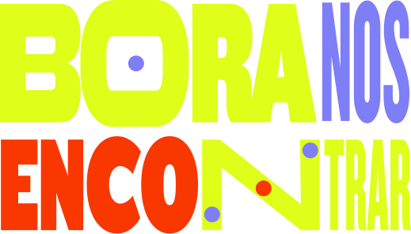

01 / FEED
04 / A METÁFORA DO ENCONTROAS JANELAS

AS JANELAS
SE ENCONTRAM.
● ● ●?
● ● ●✳
● ● ●↗
DO DIGITAL
AO PRESENCIAL
AO PRESENCIAL
A comunidade já se conecta pelas telas. O encontro presencial cria a oportunidade de aproximar as pessoas por trás delas.
05 / PRIMEIRA APLICAÇÃO

O convite para a Semana de Inovação inaugura essa linguagem: tipografia protagonista, janelas e conexões em uma mesma composição.
ESTUDO VISUAL · EM DESENVOLVIMENTO
Aplicação inicial da direção criativa. A versão final será ajustada com as informações confirmadas e as assinaturas institucionais.
FREE-LAS
BORANOS
ENCONTRAR
● ● ●◉
● ● ●✎
● ● ●▥
A comunidade
vai se reunir naSEMANA DE
INOVAÇÃO 2026BRASÍLIA
vai se reunir naSEMANA DE
INOVAÇÃO 2026BRASÍLIA